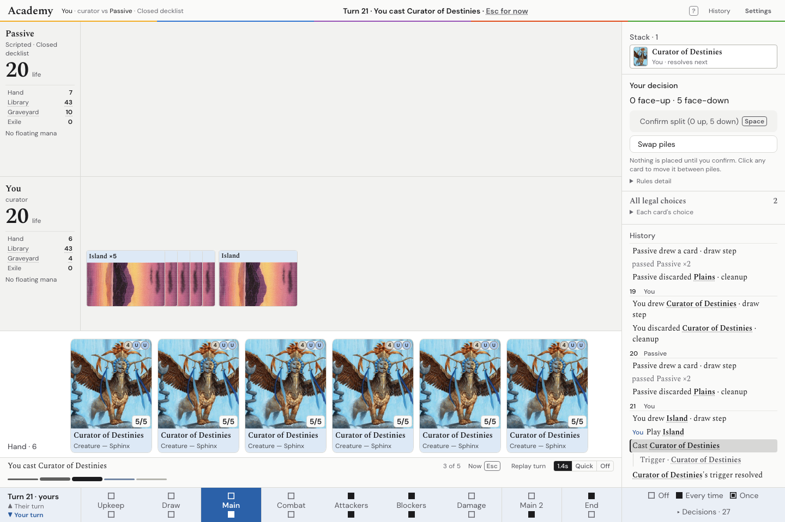
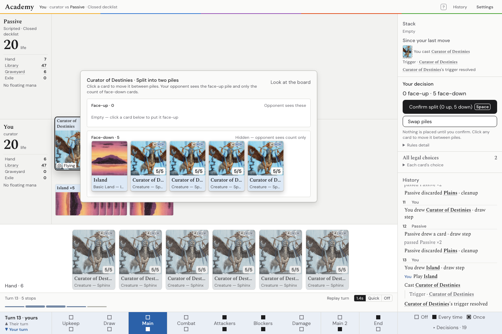
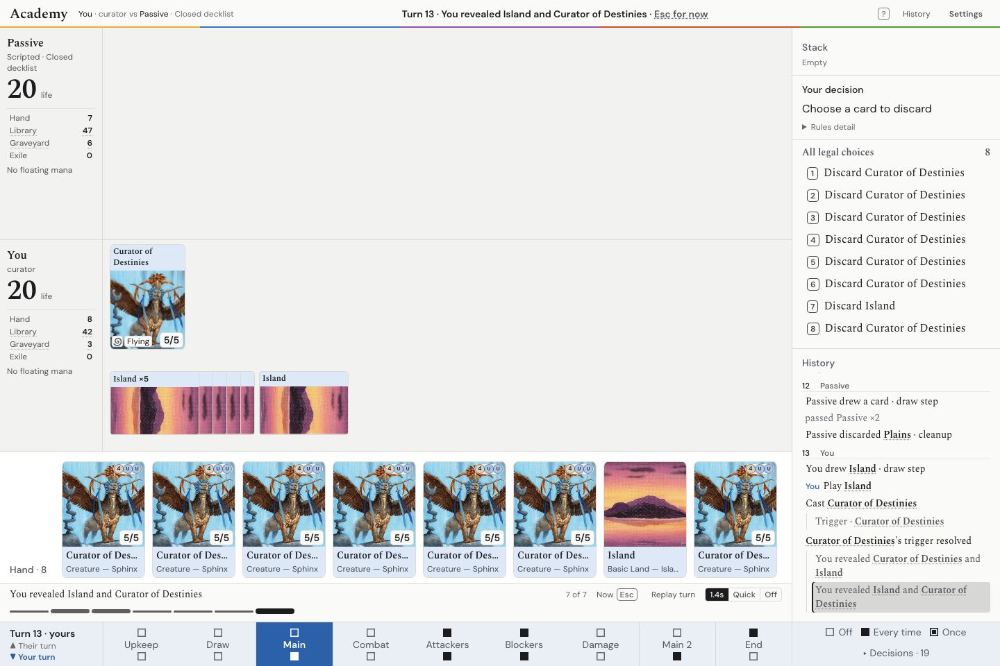
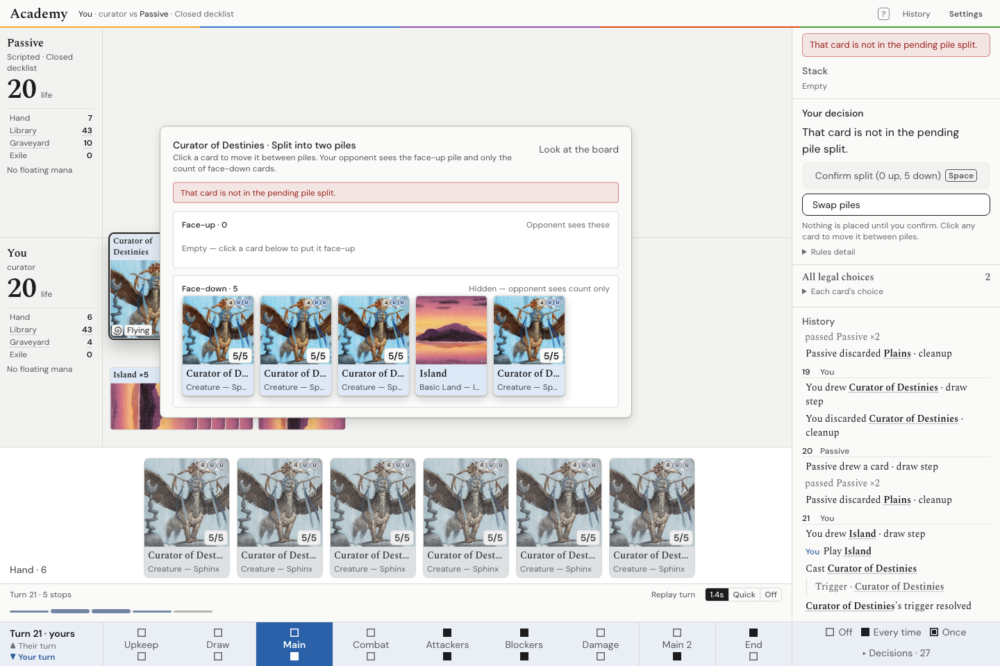
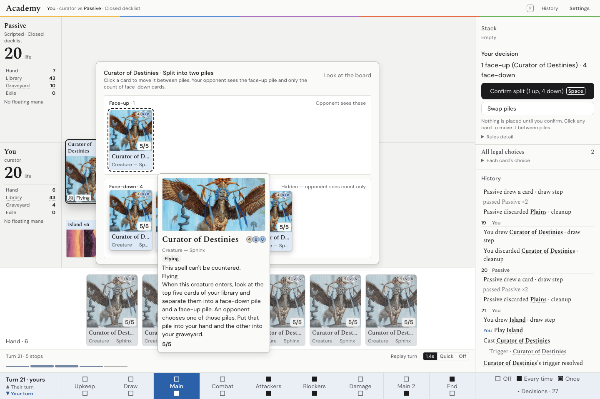

Native extension rebuilt from this checkout (release, cp313). Academy ran through ./scripts/play
on ports 8765/5291; a Node Playwright script played a real game against the passive bot. The library API ran as a plain managym
caller with -W error::DeprecationWarning.
env.decision(), offers, mid-combat, stale addressRaging Goblins against Plains. Offers carry readable labels and object sources. One raw attack step followed by
env.decision() reports the remaining two goblins plus the committed one. A grouped preview of the rest compiles two steps.
Submitting at the pre-step address is refused.
first decision single [(0, 'Keep hand', None), (1, 'Mulligan', None)] ATTACK offers [(0, 'Attack with Raging Goblin', 'object'), (1, "Don't attack with Raging Goblin", 'object')] after one raw step: declare_attackers [2 remaining] committed [ObjectRenderId(entity=130, incarnation=2)] preview complete True refused None steps 2 attackers=[130, 128, 124] stale rejected: stale or unauthorized decision
Works. No deprecation warnings on the new path.
Goblins and Ogres against Ogres for three seeds, played to the end twice: once with raw env.submit(offer_id) per
attacker and blocker, once with DeclareAttackersChoice/DeclareBlockersChoice.
seed 1 79f7261d20cd89a0 == 79f7261d20cd89a0 (60 vs 31 caller decisions) seed 2 b60ee39f837391ea == b60ee39f837391ea seed 5 14caba3f728d8061 == 14caba3f728d8061
Final state_digest() is identical in every case.
Imported decks: 24 Island + 36 Curator against 60 Plains, passive bot, automatic mana. The script keeps its hand, plays Islands and casts Curator.
Found: the group arrives while the board still walks the cast and trigger. The pile panel (and ArrangePanel for
Scry/Surveil) is hidden during the walk, but the rail Confirm was already enabled and ready, reading "Confirm split (0 up, 5 down)".
My first two driver runs clicked it as if it were "Pass priority". Each of the eight Curators then put all five cards face-down
without the panel appearing, and the bot picked the empty face-up pile, so the game ended with 40 cards in the graveyard. A person who clicks
the rail button during the 1.4 s walk would do the same. Surveil starts ready ("Keep on top") under the same hidden-panel condition.
Space was already safe (it returns to now during a walk).
Fixed in Board.svelte: arrange and pile Confirms are ready only while their panel can be shown
(groupShown). Combat confirms are unchanged, so the MTG-441 behaviour is preserved.
New e2e partition-piles.spec.ts › "looking back hides the pile split and holds its Confirm…" fails without the fix
(Expected: disabled / Received: enabled) and passes with it.
After the fix, on arrival during the walk the Confirm is disabled:

Panel after the walk, then two cards moved face-up. The rail reads the engine-previewed split:


confirm label Confirm: 2 face-up (Island ×2) · 3 face-down ready true
raw disclosure DETAILS open=false (raw per-card offers reachable, collapsed)
reload mid-draft → panel 1, same piles (draft restored)
sent after confirm ["group_command"] (exactly one message)
plan {"kind":"partition_piles","face_up":[{"entity":51,…},{"entity":35,…}]}
panel after confirm 0; outcome accepted
The recording has one row per native step (authority.group.<id>.0…4 "Put … in the face-down/face-up pile"), followed by the
opponent's Choose … pile.

Works after the fix.
page.routeWebSocket rewrote the first outgoing pile plan to an unknown card. The server answered group_refused
"That card is not in the pending pile split."; the game stayed at the split and Confirm went not-ready. Clicking one card cleared every
copy of the message and re-readied Confirm. A real Confirm then went through.


Works.
vitest group / game.svelte / partition 26 passed svelte-check 0 errors playwright partition-piles + grouped-decisions 9 passed (incl. new walk test) pytest tests/env/test_group.py tests/academy/test_group_command.py 13 passed scripts/public_api.py check matches
ChoosePile view with a human choosing against a bot's Curator: the passive bot never casts. This is still an open follow-up in questions.md.cargo nextest for rules/group.rs was left to gate (no Rust changed here).ARRIVAL panel 0 primary Confirm: 0 face-up · 5 face-down ready true enabled true.